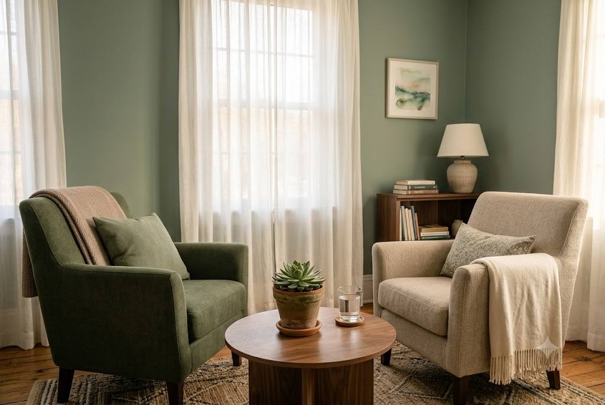

Understanding the Waves of Grief
Grief rarely follows a straight line. Discover how to navigate the unexpected waves with self-compassion and patience.
Read ArticleA safe, compassionate space to navigate loss, find renewal, and slowly turn a new page. We are here to support you at your own pace.
We believe in honoring your unique journey with gentle, trauma-informed care.
Providing a safe, confidential environment where you can freely express your feelings without judgment.
Tailoring our sessions to meet your specific emotional needs and gently guiding you forward.

Utilizing evidence-based practices designed specifically for those navigating deep loss and trauma.
Creating a sanctuary for healing.
My name is Dr. Sarah Jenkins, and I have dedicated the past 15 years to helping individuals and families navigate the complexities of bereavement. I understand that grief is not a problem to be solved, but a journey to be witnessed.
At NewLeaf, our mission is to offer a supportive holding environment. Here, you are free to bring your whole self—your sorrow, your memories, and your hopes.
Gentle readings to support you when you need it most.
Grief rarely follows a straight line. Discover how to navigate the unexpected waves with self-compassion and patience.
Read ArticleCreating small, meaningful rituals can provide comfort and a dedicated space to honor your loved one's memory.
Read ArticleGuiding young minds through the concept of death requires honesty, gentle reassurance, and age-appropriate language.
Read ArticleWords from those who have walked this path before you.
"NewLeaf provided a safe harbor during the darkest time of my life. Their compassion is immeasurable."
"I felt heard, validated, and gently guided. I didn't feel like a patient; I felt like a human being in pain."
"The group support sessions helped me realize I wasn't alone. It's a truly safe and grounded environment."